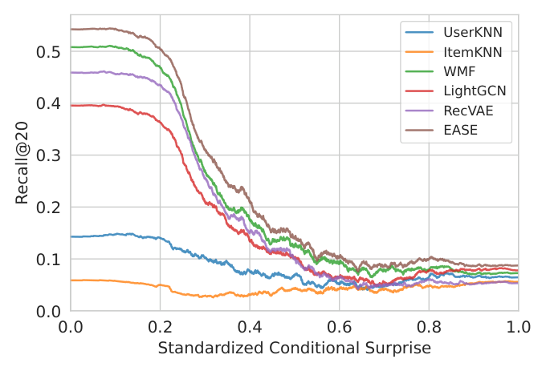

Quantifying User Coherence: A Unified Framework for Analyzing Recommender Systems Across Domains (量化用户一致性：跨域推荐系统统一分析框架)
- 会议/期刊: WWW 2026
- 作者与机构: Michaël Soumm (Télécom Paris), Alexandre Fournier Montgieux, Adrian Popescu, Bertrand Delezoide (CEA List / Amanda.com)
- 推荐链路定位: 评测与系统设计（不改变召回/排序模型本身，而是提供用户画像度量与分层评测工具）
- 研究方向: 去偏公平、可信隐私与工业架构 / 冷启动与长尾推荐
- 论文原文: https://arxiv.org/abs/2410.02453v2
- 开源代码: https://github.com/MSoumm/coherence-measures
TL;DR (1分钟核心速览)
推荐系统性能在不同用户间差异巨大，但成因缺乏解释。本文提出两个信息论度量：Mean Surprise \(S(u)\)（用户偏离热门物品的程度，关联流行度偏差）与 Mean Conditional Surprise \(CS(u)\)（用户交互内部的共现一致性，域无关）。在 7 种算法 × 9 个数据集上，通过 Logistic 回归与 SIMEX 去噪证明二者是性能的强预测因子：复杂模型的增益几乎全部集中在"高一致"用户，而所有算法在"低一致"用户上普遍失效。据此提出分层评测、行为对齐分析与用户分群专用建模三种应用，Netflix 上专用模型以更少数据在一致用户段取得 Recall@20 提升（如 EASE 53.0→56.0）。
Background & Motivation (背景与核心矛盾)
- 主流范式: 协同过滤评测长期依赖聚合指标（Recall@K / NDCG），近年虽有多样性、新颖性、满意度等列表级指标，但均刻画"推荐输出"而非"输入用户画像"本身。
- 前人局限: (1) 现有"灰羊用户"识别依赖用户间相似度聚类或密度方法，对画像密度敏感且需数据集特定超参，跨域泛化差；(2) 模型相关的 surprise 方法（如 Unexp-DIN）绑定特定架构的预测分布，无法解释"为何某类用户对所有模型都难"。
- 核心洞察 (Key Insight): 若把物品概率定义为全体用户中的出现频率 \(p_i^*\) 与二阶共现 \(p_{i|j}^*\)，则用户画像的"意外度"与"内部一致性"可在不依赖任何模型的前提下被量化；且 \(CS(u)\) 的分布在电影、电商、旅游等 9 个数据集上高度稳定，具备域无关性。
- 本文切入点: 用归一化到用户自身物品集上的平均交叉熵（而非全库 \(m\) 维求和）构造稳定估计量，并以理论界证明其是理想交叉熵的良态重缩放。
Method (核心方法设计)
1. 整体框架 (Overall Architecture)
框架分三层：度量层从二值交互矩阵 \(X\in\{0,1\}^{n\times m}\) 估计一阶/二阶物品频率，计算每个用户的 \(S(u)\) 与 \(CS(u)\)；验证层以 Logistic 回归（含乘积交互项与 SIMEX 测量误差校正）将 Recall@20 二值结果对度量做回归，用平均边际效应 (AME) 与 McFadden \(R^2\) 量化解释力；应用层基于度量做分层评测、输入-输出一致性保持度分析与用户分群专用模型训练。
flowchart TD
A["二值交互矩阵 X"] --> B["一阶频率 p_i* 与二阶共现 p_i|j*"]
B --> C["S(u) 与 CS(u) 用户度量"]
C --> D["Logistic 回归 + SIMEX 边际效应分析"]
C --> E["分层评测 / 一致性保持度 / 用户分群建模"]
D --> F["性能差异归因结论"]
E --> F
2. 关键设计拆解 (Key Designs)
-
Mean Surprise 与 Mean Conditional Surprise（归一化估计量）：朴素定义 \(\tilde S(u)=-\frac{1}{m}\sum_i \log(p_i^*)x_{ui}\) 在全库维度上求和，导致新增任何物品都单调增大度量，违背直觉且随 \(|u|\) 漂移。本文改为仅在用户已消费物品上归一化： $\(S(u)=-\frac{1}{|u|}\sum_{i\in u}\log p_i^*,\qquad CS(u)=-\frac{1}{|u|^2}\sum_{i\in u}\sum_{j\in u}\log p_{i|j}^*\)$ 直觉：加入一个高频常见物品时度量可下降，符合"意外度"语义；且对不同活跃度用户可比。附录证明 \(CS(u)=PS(u)-S(u)\)，即二阶度量自动扣除一阶流行度效应，二者近似正交。
-
理论稳定性保证（Proposition 3.1 / 3.2）：稀疏二值数据下朴素交叉熵估计方差极大。作者证明所提估计量与理想交叉熵 \(S^*(u)\) 的比值被 \(\mathbb{E}[m/|u|]\) 类因子上下夹住，并在 \(|u|\sim\text{Poisson}(\lambda)\) 假设下给出 \(\mathbb{E}_{X\ge1}[1/X]\le 2\mathbb{E}_{X\ge1}[X]\) 的紧界（经验常数 1.37）。这解释了为何该度量在冷启动用户上仍可用——附录 SNR 分析显示 Netflix 上 \(|u|=5\) 用户的信噪比达 14.36。
-
训练目标、负采样与推理效率：本文不训练新推荐模型，度量计算为一次性 \(O(\sum_u |u|^2)\) 统计，可在离线管道中预计算并缓存；回归分析使用 SIMEX 对 \(\log p_i\)、\(\log p_{i|j}\) 的估计方差做模拟外推，消除测量误差导致的系数衰减。专用模型实验沿用各基线原训练流程（Optuna 50 轮调参，最大化验证集 Recall@20）。
Experimental Setup & Evaluation Protocol (实验设置与评估协议)
- 数据集与预处理: 评分二值化阈值 \(r_{ui}>3\)，采用
5-core迭代过滤（先滤物品后滤用户，作者指出常见实现顺序会导致残留物品不足 5 次的问题）：
| 数据集 | #Users | #Items | #Interactions | 密度 | 场景说明 |
|---|---|---|---|---|---|
| ML 1M | 6K | 3.1K | 562K | \(3\times10^{-2}\) | 电影 |
| ML 10M | 69K | 9.4K | 5.7M | \(9\times10^{-3}\) | 电影 |
| Netflix Small | 8.3K | 2.7K | 320K | \(1\times10^{-2}\) | 电影 |
| Netflix | 463K | 18K | 59.9M | \(7\times10^{-4}\) | 电影（大规模） |
| Vis2Rec | 9.1K | 9.3K | 200K | \(2\times10^{-3}\) | 旅游 |
| Tradesy | 6.6K | 12K | 73K | \(9\times10^{-4}\) | 二手时尚电商 |
| Amazon Music | 8.6K | 11K | 87K | \(9\times10^{-4}\) | 电商 |
| Amazon Office | 20K | 62K | 468K | \(4\times10^{-4}\) | 电商 |
| Amazon Toys | 61K | 143K | 1.2M | \(1\times10^{-4}\) | 电商 |
- 数据划分与防穿越:
Leave-One-Out——每数据集采样 10,000 测试用户（不足则全取），最后一条交互为测试、倒数第二条为验证，其余为训练；保证测试用户出现在训练集中。 - 排名评测协议: 单正样本设定下 Recall@K 与 Precision@K 等价，故仅用 Recall@20，等价于二值 0/1 命中；对全库未交互物品做
Full-Ranking。 - 对比基线与超参设置: 7 种算法覆盖流行度 (MostPop)、邻域 (UserKNN/ItemKNN)、矩阵分解 (WMF/EASE)、图卷积 (LightGCN)、变分自编码 (RecVAE)；Optuna 50 轮搜索，显著性 \(p<0.05\)。
Key Experimental Results (实验关键数据)
1. 主实验对比 (Main Results)
整体 Recall@20（图 7 数值化，取代表性数据集）：
| 算法 | ML 1M | ML 10M | Netflix | Vis2Rec | Tradesy | A. Music | A. Toys |
|---|---|---|---|---|---|---|---|
| MostPop | 低 | 低 | 低 | 低 | 低 | 低 | 低 |
| ItemKNN | 中 | 中 | — | 中 | 中 | 中 | 中 |
| WMF | 较高 | 较高 | 较高 | 较高 | 较高 | 较高 | 较高 |
| LightGCN | 较高 | 较高 | 较高 | 中 | 中 | 中 | 中 |
| RecVAE | 中 | 高 | 高 | 中 | 中 | 中 | 中 |
| EASE | 最优 | 较高 | 较高 | 最优 | 最优 | 最优 | 最优 |
（原文以图 7 呈现，EASE 在几乎所有数据集最优；WMF 次优，但在最大规模数据集上 RecVAE 因数据量优势反超；UserKNN 在 Netflix 上因 1.4TB 内存饱和未跑。）
分层评测核心结果（图 1）：按标准化 \(CS(u)\) 分桶后，所有算法的 Recall@20 随 \(CS(u)\) 升高单调下降并收敛至同一低水平；算法间差距仅在低 \(CS(u)\)（一致用户）区间显著。
用户分群专用模型（Netflix，一致用户最低十分位，表 7）：
| 模型 | ItemKNN | LightGCN | WMF | RecVAE | EASE |
|---|---|---|---|---|---|
| Vanilla（全量训练） | 0.0 | 33.8 | 47.4 | 46.0 | 53.0 |
| Specialized（仅一致子集） | 3.2 | 39.3 | 49.2 | 47.8 | 56.0 |
2. 消融实验 (Ablation Study)
以回归模型变量消融（AME，单位：Recall@20 百分点 / 1 标准差，取 ML 1M 与 Amazon Toys 代表）：
| 变量配置 | ML 1M | A. Toys | 说明 |
|---|---|---|---|
| 仅 \(\lvert u\rvert\) | -0.02 | +0.05 | 画像密度单独解释力弱 |
| 仅 \(S(u)\) | +0.02 | -0.03 | 流行度偏离影响最小 |
| 仅 \(CS(u)\) | -0.22 | -0.09 | 一致性是主导负向因子 |
| \(S(u)\times CS(u)\) 全交互 | \(R^2\)=0.34 | \(R^2\)=0.35 | AIC 最优模型 |
| 朴素 \(\tilde S,\widetilde{CS}\)（未归一化） | 随 \(\lvert u\rvert\) 二次漂移 | 同左 | 图 3 显示不可比 |
3. 关键实验发现 (Key Findings)
- 增益集中于一致用户：图 1 显示 \(CS(u)\) 最高的分桶中所有 7 种算法 Recall@20 收敛到近乎相同的低值，说明聚合指标下的"模型进步"实质是对低 \(CS(u)\) 用户的改善；对高 \(CS(u)\) 用户，算法选择几乎无关紧要。
- 一致性是比流行度更强的难度信号：表 5 中 \(CS(u)\) 的 AME 在多数数据集达 -13 至 -26 个百分点（如 EASE 在 A. Toys 上 -26），而 \(S(u)\) 仅 -3 至 -20，且 \(S(u)\) 在电影域几乎不显著——说明模型对"小众口味"已有一定适应，但对"内部不自洽"束手无策。
- 数据质量可胜数据规模：Netflix 上仅用最低十分位 \(CS(u)\) 的一致用户训练，EASE 在目标段从 53.0 提升至 56.0、LightGCN 从 33.8 提升至 39.3，尽管训练数据大幅减少——表明不一致用户引入的噪声对一致用户建模的损害超过数据量收益。
Highlights, Limitations & Rating (亮点、对比与审稿评价)
- 与代表作对比 (vs. Prior Work): 相比灰羊用户识别（Ghazanfar 聚类、Gras 分布法），本文度量无需聚类与数据集特定超参，且具理论界保证；相比 Unexp-DIN 等模型相关 surprise，本文度量完全 model-agnostic，刻画输入数据内在属性；相比 Elliot / ReChorus 等评测框架聚焦准确率指标，本文补充了"用户画像难度"这一评测维度。
- 可迁移亮点: (1) 分层评测可直接嵌入 A/B 实验报告，按 \(CS(u)\) 分桶暴露聚合指标掩盖的失效模式；(2) "一致性保持度"（输入与推荐集 \(CS\) 的 Pearson 相关）可作为多样性/长尾场景的补充指标，表 6 显示多数模型对 \(S(u)\) 保持良好（均值 0.2–0.6）但对 \(CS(u)\) 保持弱（均值 0.03–0.43）。
- 审稿级局限批判: (1) 仅覆盖二值隐式反馈与 7 种基础 CF 模型，未验证显式评分、会话数据及 LLM-based 推荐器；(2) 专用模型实验仅为 Netflix 单数据集的概念验证，提升幅度温和（1.8–5.5 点），且未给出在线部署的延迟与分群路由成本分析；(3) \(CS(u)\) 计算为 \(O(|u|^2)\)，对超活跃用户需采样近似。
- 四维评分: 创新性 ⭐⭐⭐⭐ | 实验扎实度 ⭐⭐⭐⭐ | 方法清晰度 ⭐⭐⭐⭐⭐ | 落地价值 ⭐⭐⭐⭐